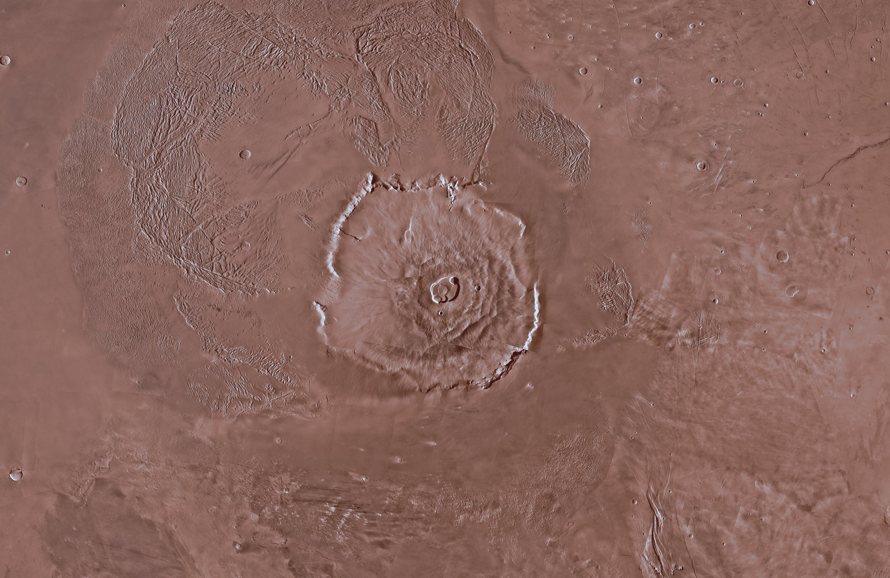

Engineer, then editor, then producer, now freelance. Still climbing.
Overview is the real picture, toned orange, with no lines. My climb turns it into a tilted night map whose contour lines are lifted by their real height (stretched about nine times, or the mountain would look flat: it is 600 km wide and 22 km tall). The milestones stand on pins; click one. The mountain stays flat and orange and teaches seven things, one at a time, with the missions that studied them. Facts here are from memory of NASA and USGS pages and get a source each before the build. Picture: Viking orbiters. Heights: Mars Global Surveyor's laser altimeter. Both public domain.
Six grounds in the manner of your reference: near-black, one soft orange light, heavy film grain. Each moves very slowly (the light drifts, the grain flickers). They are drawn live. Tell me which goes on which page: portfolio, long form, short form, behind the home shelves, behind each open shelf.
3.5 seconds, opening from the centre of the screen, with the painting's wandering edge and bright line. One thing to know: while a page change runs, the browser shows pictures of the two pages, so nothing can be clicked until it ends. At 3.5 seconds that is noticeable, so the build will let a second click or key press finish the change at once.
Fourteen spines drawn as one series, in the manner of Stripe Press: cloth colours, one foil ink per book, a small emblem for what the book is about, the title, the author, and one shared mark at the foot. Widths follow the page counts and heights follow the real books. Hover a spine to lift it. In the build these are painted onto the 3D books, so the lift and the cover turn stay as they are.